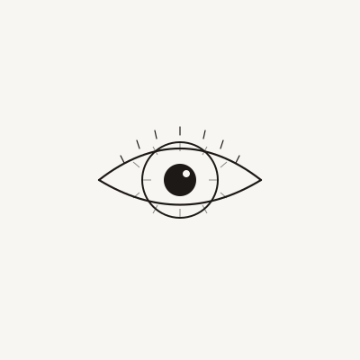

Biomimetic Interface · 2025
Alive:
Interactive Eye System
A living eye rendered on canvas that tracks the cursor, blinks at irregular intervals, dilates in response to inactivity, and breathes through subtle iris micro-movements. No libraries — the entire system is written in vanilla JavaScript, treating the eye as a stateful biological object rather than a graphic.
Behaviour Model
The eye is a state machine with four primary states: tracking, resting, blinking, and dilating. It spends most of its time in tracking mode — the pupil offset follows the cursor position mapped to a ±35° gaze range. After a period without input, the eye shifts to resting state: gaze drifts to center, iris contrast drops, and blink frequency increases slightly.
Blink timing is not fixed. The average interval is ~4 seconds, but randomized ±1.5 seconds with a small chance of a "double blink" — the kind of reflex variation that makes biological timing feel unscripted. The eyelid is drawn as a smooth arc with interpolated height, closing and opening over ~140ms.
Rendering
The iris is built from concentric rings with radial variation in color — lighter toward the pupil, darker at the limbus — achieved with a radial canvas gradient and layered arc strokes with varying opacity. Radial "spoke" lines add texture without overcomplicating the geometry. The pupil uses a separate circular clip region to stay perfectly round regardless of iris deformation.
Eyelashes are individually placed with length variation seeded per-eye so they look grown rather than drawn. The sclera carries a faint warm undertone that makes the render feel less clinical and more alive.